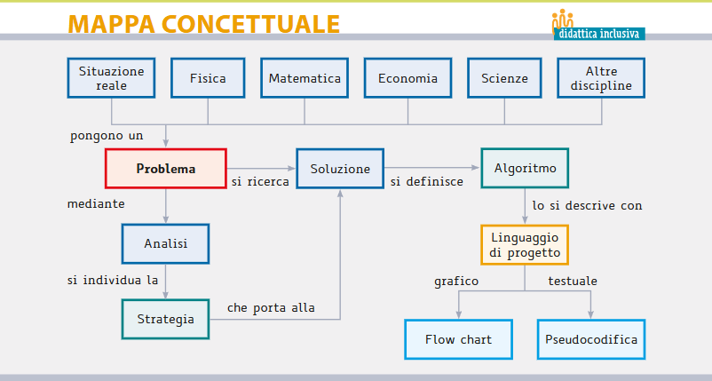

Mappa concettuale
Dalla situazione reale → Problema → Analisi → Strategia → Algoritmo → Programma.

Dal contesto al problema computazionale
- Situazione reale: il contesto dal quale nasce una domanda.
- Problema: una domanda generale da risolvere sistematicamente per tutti i casi di un certo tipo.
- Istanza: un caso specifico del problema, formato dai dati forniti in ingresso.
- Input: i dati noti che descrivono l'istanza.
- Output: il risultato che vogliamo ottenere.
- Vincoli: le condizioni che input, operazioni e risultato devono rispettare.
Esempio: “stabilire se un numero naturale è primo” è il problema; verificare il numero 37 è una sua istanza.
Che cosa può chiedere un problema?
- Decisione: produrre una risposta sì/no. Esempio: “
n è primo?”.
- Ricerca: trovare un oggetto che soddisfa certe condizioni. Esempio: “trova un divisore di
n maggiore di 1”.
- Ottimizzazione: trovare la soluzione migliore secondo un criterio. Esempio: “trova il percorso più corto da A a B”.
- Enumerazione: elencare tutte le soluzioni. Esempio: “elenca tutti i divisori di
n”.
- Calcolo o trasformazione: ottenere un valore o trasformare dei dati. Esempio: “ordina una lista di numeri”.
Attenzione: ridurre il numero di confronti serve a rendere più efficiente un algoritmo di ordinamento; non cambia il risultato richiesto dal problema.
Formalizzazione con insiemi e relazioni
Questa parte rende matematicamente precise le idee di input, output e soluzione corretta.
Dal problema all'algoritmo
- Analizza il contesto e separa le informazioni utili da quelle irrilevanti.
- Specifica input, output, vincoli e obiettivo.
- Progetta una strategia valida per tutte le istanze ammesse.
- Descrivi l'algoritmo con passi finiti, eseguibili e non ambigui.
- Verifica che termini e produca sempre un risultato corretto.
- Implementa il programma in un linguaggio adatto.
L'algoritmo è indipendente dal linguaggio; il programma è la sua realizzazione concreta.
Uno sguardo alla complessità
Due algoritmi corretti possono richiedere quantità diverse di tempo e memoria.
- Modello di calcolo: stabilisce quali operazioni consideriamo elementari.
- Tempo: numero di passi elementari in funzione della dimensione dell'input.
- Spazio: memoria aggiuntiva necessaria.
- Altre risorse: accessi a file, comunicazioni di rete o consumo energetico.
Attività in classe
- Formalizza il problema del contadino, del lupo, della capra e del cavolo:
- individua input, output, mosse lecite, vincoli e obiettivo;
- stabilisci se si tratta principalmente di decisione, ricerca o ottimizzazione.
- Specifica input e output per il problema: “dato un numero naturale
n, stabilisci se è perfetto”.
- Individua l'istanza: nel problema precedente, quale istanza viene descritta quando
n = 28?